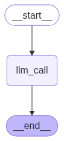

Using chat models and messages in Graphs - LangGraph
Author
Shefali Lathwal
Published
April 25, 2025
Modified
June 3, 2025
Goals
We will use chat messages in our graph
We will use chat models in our graph
Messages
Chat models can use messages, which capture different roles within a conversation.
LangChain supports various message types, including HumanMessage , AIMessage, SystemMessage, and ToolMessage.
These represent messages from the user, from the chat model, for the chat model to instruct behaviour, and from a tool call.
Each message can be supplied with the following:
content - content of the message
name - optional, who is creating the message
response_metadata - optional, a dictionary of metadata that is often specific to each model provider
from pprint import pprintfrom langchain_core.messages import AIMessage, HumanMessage, SystemMessagemessages = [AIMessage(content =f"So you said you were researching ocean mammals?", name ="Model")]messages.extend([HumanMessage(content=f"Yes, that's right.", name ="Lance")])messages.extend([AIMessage(content =f"Great, what would you like to learn about?", name ="Model")])messages.extend([HumanMessage(content =f"I want to learn about the best place to see Orcas in the US. Keep your answer to one paragraph.", name ="Lance")])for m in messages: m.pretty_print()
================================== Ai Message ==================================
Name: Model
So you said you were researching ocean mammals?
================================ Human Message =================================
Name: Lance
Yes, that's right.
================================== Ai Message ==================================
Name: Model
Great, what would you like to learn about?
================================ Human Message =================================
Name: Lance
I want to learn about the best place to see Orcas in the US. Keep your answer to one paragraph.
Chat Models
Chat Models can use a sequence of messages as input and support message roles as discussed below. We will use a local model from Ollama
from langchain_ollama import ChatOllamagemma3 = ChatOllama(model ="gemma3:4b", temperature =0)result = gemma3.invoke(messages)type(result)
langchain_core.messages.ai.AIMessage
print(result)print(result.response_metadata)
content='For the best chance to see Orcas in the US, the San Juan Islands of Washington State are widely considered the premier location. These islands, part of the Salish Sea, are home to a large resident pod of orcas that primarily feed on salmon. However, you can also spot Transient (Bigg’s) orcas, which hunt marine mammals like seals and sea lions. The summer months (June-September) offer the highest probability of seeing resident orcas, while winter months offer a chance to witness the more elusive Transient orcas. Whale watching tours operate daily from towns like Friday Harbor and Anacortes, offering expert guides and increased chances of a sighting.' additional_kwargs={} response_metadata={'model': 'gemma3:4b', 'created_at': '2025-06-03T21:53:13.046947Z', 'done': True, 'done_reason': 'stop', 'total_duration': 15372298708, 'load_duration': 75441042, 'prompt_eval_count': 73, 'prompt_eval_duration': 1915960458, 'eval_count': 136, 'eval_duration': 13370734958, 'model_name': 'gemma3:4b'} id='run-7f689f20-f359-4868-b848-43df0d2f3cdb-0' usage_metadata={'input_tokens': 73, 'output_tokens': 136, 'total_tokens': 209}
{'model': 'gemma3:4b', 'created_at': '2025-06-03T21:53:13.046947Z', 'done': True, 'done_reason': 'stop', 'total_duration': 15372298708, 'load_duration': 75441042, 'prompt_eval_count': 73, 'prompt_eval_duration': 1915960458, 'eval_count': 136, 'eval_duration': 13370734958, 'model_name': 'gemma3:4b'}
Using messages as graph state
With the above foundations in place, we can now use messages in our graph state.
Let’s define our state MessageState.
It’s defined as a TypedDict with a single key:messages
messages is simply a list of type AnyMessage, meaning it’s a list of messages.
from typing import TypedDictfrom langchain_core.messages import AnyMessageclass MessageState(TypedDict): messages: list[AnyMessage]
Reducers
Reducers are functions that allow us to specify how to handle state updates as we move through a graph.
Now, as the graph runs, we do not want to overwrite messages, rather append our messages to our messages state key. The above problem motivates the idea of a reducer function.
Reducer functions allow us to specify how state updates are performed.
if no reducer function is explicitly specified, then it is assumed that all updates to that key should override it.
Since we want to append messages, we can use a pre-built add_messages reducer!
The above ensures that state updates we send to our graph are appended to the existing list of messages.
We annotate our key with a reducer function as metadata using Annotated from typing.
Since the above operation is so common, langgraph provides a pre-built MessagesState This state has the following: - A pre-built single messages key - which is a list of AnyMessage objects that uses the add_messages reducer.
from langgraph.graph import MessagesStateclass State(MessagesState):# Add any other keys you need besides messages, which is pre-builtpass
The classes State and MessageState work equivalently.
Let’s look at how add_messages function works in isolation.
initial_messages = [AIMessage(content ="hello, how can I assist you?"),HumanMessage(content ="I'm looking for information on marine biology")]# new message to addnew_message = AIMessage(content ="Sure, I can help with that. What specifically are you interested in?")#add_messages(initial_messages, new_message)
[AIMessage(content='hello, how can I assist you?', additional_kwargs={}, response_metadata={}, id='09d0e4ba-c62f-4df3-93c5-ac8880a3cc98'),
HumanMessage(content="I'm looking for information on marine biology", additional_kwargs={}, response_metadata={}, id='dd9fbc7a-5849-4ed3-90d4-00717735445e'),
AIMessage(content='Sure, I can help with that. What specifically are you interested in?', additional_kwargs={}, response_metadata={}, id='0f8d02e4-305a-475d-8582-bdf39db8ac11')]
Make a graph
from IPython.display import Image, displayfrom langgraph.graph import StateGraph, START, END# Define a state classclass State(MessagesState):# Add any additional keys apart from messagespass# Define a nodedef calling_an_llm(state: State):return {"messages": [gemma3.invoke(state["messages"])]}# Build graphbuilder = StateGraph(State)builder.add_node("llm_call", calling_an_llm)builder.add_edge(START, "llm_call")builder.add_edge("llm_call", END)graph = builder.compile()# View the graphdisplay(Image(graph.get_graph().draw_mermaid_png()))

Run the graph
result = graph.invoke({"messages": HumanMessage(content ="hello, how are you today")})result
{'messages': [HumanMessage(content='hello, how are you today', additional_kwargs={}, response_metadata={}, id='29a6621c-a5eb-4f87-bab3-eb29ab51223c'),
AIMessage(content='I’m doing great, thanks for asking! As a large language model, I don’t really *feel* in the way humans do, but my systems are running smoothly and I’m ready to chat. 😊 \n\nHow about you? How is *your* day going so far? \n\nDo you want to talk about something specific, or just have a general conversation?', additional_kwargs={}, response_metadata={'model': 'gemma3:4b', 'created_at': '2025-06-03T21:53:21.455675Z', 'done': True, 'done_reason': 'stop', 'total_duration': 8188044500, 'load_duration': 68854084, 'prompt_eval_count': 15, 'prompt_eval_duration': 251456458, 'eval_count': 80, 'eval_duration': 7867104667, 'model_name': 'gemma3:4b'}, id='run-14153384-f89d-41af-9c44-715d0786fc46-0', usage_metadata={'input_tokens': 15, 'output_tokens': 80, 'total_tokens': 95})]}
result = graph.invoke({"messages": HumanMessage(content ="tell me about marine biology in 2 sentences.")})print(result)
{'messages': [HumanMessage(content='tell me about marine biology in 2 sentences.', additional_kwargs={}, response_metadata={}, id='c05635d4-5385-48cc-97ec-305cfbdbc899'), AIMessage(content='Marine biology is the scientific study of life in the ocean, encompassing everything from microscopic plankton to massive whales and the complex ecosystems they inhabit. It explores the diverse adaptations, behaviors, and interactions of marine organisms and their environment, crucial for understanding and protecting our oceans.', additional_kwargs={}, response_metadata={'model': 'gemma3:4b', 'created_at': '2025-06-03T21:53:26.925497Z', 'done': True, 'done_reason': 'stop', 'total_duration': 5452570334, 'load_duration': 59996250, 'prompt_eval_count': 19, 'prompt_eval_duration': 282983167, 'eval_count': 54, 'eval_duration': 5108555000, 'model_name': 'gemma3:4b'}, id='run-fd238a25-c902-4a2f-a5bb-85341b5df514-0', usage_metadata={'input_tokens': 19, 'output_tokens': 54, 'total_tokens': 73})]}
result["messages"][-1].content
'Marine biology is the scientific study of life in the ocean, encompassing everything from microscopic plankton to massive whales and the complex ecosystems they inhabit. It explores the diverse adaptations, behaviors, and interactions of marine organisms and their environment, crucial for understanding and protecting our oceans.'